전자산업기사 (2007-03-04 기출문제)
1과목: 전자회로
1. 베이스 접지의 트랜지스터 증폭회로에서 입력신호전압과 출력신호 전압 간의 위상관계를 옳게 나타낸 것은?
- 위상차가 없다.
- 90°의 위상차가 있다.
- 180°의 위상차가 있다.
- 270°의 위상차가 있다.
(정답률: 47%)

2. 이상적 연산증폭기의 조건으로 옳지 못한 것은?
- 전압 증폭도가 무한대
- 입력 임피던스가 무한대
- 출력 임피던스가 무한대
- 주파수 대역폭이 무한대
(정답률: 87%)
3. 그림과 같은 OP 앰프 회로에서 Vo/Vs의 값은?
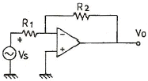
- R1/R2
- -R1/R2
- R2/R1
- -R2/R1
(정답률: 75%)
4. 공통 이미터접지 증폭회로에서 트랜지스터의 h-정수 중 전류증폭률을 나타낸 것은?
- hie
- hfe
- hre
- hoe
(정답률: 66%)
5. 전력증폭도 10배를 데시벨(dB)로 표시하면?
- 0 dB
- 10 dB
- 20 dB
- 30 dB
(정답률: 38%)
6. 다음 회로는 컬렉터 동조 발진기이다. 발진 주파수를 fo, 동조 주파수를 fr 이라 할 때, fo 와 fr 이 어떠한 관계에 있을 때 안정적으로 발진하는가? (단, 입력측은 유도성이라 한다.)
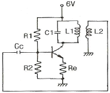
- fo = fr
- fo ＞ fr
- fo ＜ fr
- fo = 2fr
(정답률: 74%)
7. 그림과 같은 파형의 전압을 A.C Voltmeter(교류전압계)로 측정할 때 옳은 값은?
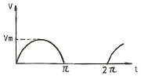
- Vm/π
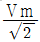
- Vm/2
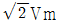
(정답률: 53%)
8. 주파수 대역폭을 넓히기 위한 방법으로 거리가 먼 것은?
- 동조 회로의 Q를 높인다.
- 복동조 회로를 사용한다.
- 부궤환을 사용한다.
- 스태거 증폭 방식을 사용한다.
(정답률: 77%)
9. 트랜지스터 직류 증폭기에 있어서 드리프트(drift)를 초래하는 주된 원인이 아닌 것은?
- hfe 의 온도변화
- VBE 의 온도변화
- hre 의 온도변화
- ICO 의 온도변화
(정답률: 46%)
10. 소스 플로어(Source follower) 증폭기는 부궤환 증폭기의 일종이다. 전압증폭도 Av는 약 얼마인가?
- 0
- 0.5
- 1
- 100
(정답률: 49%)
11. 임피던스 정합이 용이하고 높은 전력이득을 얻을 수 있는 증폭단 사이의 결합 방식은?
- RC 결합
- 변성기 겨합
- LC 결합
- C 결합
(정답률: 52%)
12. 700kHz인 반송파를 1000Hz로 100% 진폭변조 하였을 때 점유주파수 대역은?
- 0~700 [kHz]
- 0~70 [kHz]
- 699~701 [kHz]
- 698~702 [kHz]
(정답률: 55%)
13. 다음 중 이미터 접지 증폭회로의 동작을 옳게 설명한 것은?
- 입력과 출력의 위상이 같다.
- 출력저항이 낮다.
- 전류 증폭도는 1이다.
- 전압 증폭도를 크게 얻을 수 있다.
(정답률: 25%)
14. 증폭도가 -10000인 증폭기의 출력의 1/10을 입력으로 궤환(feedback) 시킨다면 1V의 입력으로 얻어지는 출력은 약 몇 V 인가? (단, 전원전압은 +15V 와 -15V를 쓰는 것으로 함)
- 10
- -10
- 15
- -15
(정답률: 48%)
15. PLL을 구성하는 회로 블록이 아닌 것은?
- 위상 검출기
- 저역 통과 필터
- 주파수체배기
- 전압 제어 발진기
(정답률: 90%)
16. 증폭회로에서 부궤환을 거는 목적으로 옳지 않은 것은?
- 주파수 대역폭의 확대
- 잡음 특성의 개선
- 출력 임피던스의 변화
- 전압 이득의 증대
(정답률: 50%)
17. 증폭도가 20dB, 잡음지수가 2dB인 전치증폭기를 잡음지수가 6dB인 주증폭기에 연결할 때 종합 잡음지수는 몇 dB 인가?
- 2.25
- 4
- 6.⑤
- 8
(정답률: 30%)
18. 다음 중 링(ring) 변조기의 용도로 가장 적합한 것은?
- 단측파대 발생
- 주파수 변조
- 위상 변조
- 펄스 변조
(정답률: 49%)
19. 트랜지스터를 증폭기로 사용할 때의 동작 영역으로 옳은 것은?
- 차단 영역
- 포화 영역
- 차단 영역 및 포화 영역
- 활성 영역
(정답률: 74%)
20. 멀티미터를 사용하여 다이오드를 시험했을 때 순방향 또는 역방향 바이어스에서 모두 매우 높은 저항으로 나타났다면 다이오드는 어떻게 된 것인가?
- 개방
- 단락
- 정상
- 낮은 저항으로 단락
(정답률: 56%)
2과목: 전기자기학 및 회로이론
21. 평행판 콘덴서에서 전극판 사이의 거리를 1/2로 줄이면 콘덴서의 용량은 처음 값에 대하여 어떻게 되는가?
- 1/2로 감소한다.
- 1/4로 감소한다.
- 2배로 증가한다.
- 4배로 증가한다.
(정답률: 59%)
22. 솔레노이드의 자기인덕턴스는 권수 N 과 어떤 관계를 갖는가?
- N 에 비례
 에 비례
에 비례- N2 에 비례
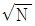
에 반비례
(정답률: 76%)
23. 반지름 a[m]인 도체구에 전하 Q[C]이 있을 때, 이 도체구가 유전율 ε[F/m]인 유전체에 있다고 하면, 이 도체구가 가진 에너지는 몇 J 인가?
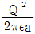
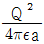
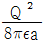
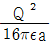
(정답률: 46%)
24. 정전용량이 일정한 정전콘덴서에 축적되는 에너지와 전위의 관계는 어떤 형태로 나타나는가?
- 원
- 타원
- 쌍곡선
- 포물선
(정답률: 60%)
25. 비유전율이 2.75인 기름속의 전자파의 속도는 약 몇 m/s 인가?(단, 기름의 비투자율은 1 이다.)
- 1.2×108
- 1.5×108
- 1.8×108
- 2.1×108
(정답률: 36%)
26. 서로 다른 두 종류의 금속으로 폐회로를 만들어 전류를 흘리면 양 접속점에서 한 쪽은 온도가 올라가고, 다른 쪽에는 온도가 내려가는 현상은?
- 톰슨 효과
- 지벡 효과
- 펠티어 효과
- 핀치 효과
(정답률: 48%)
27. 벡터 A, B의 값이 A = j + 2j + 3k, B = -i + 2j + k 일 때 AㆍB의 값은?
- 2
- 4
- 6
- 8
(정답률: 64%)
28. 맥스웰 전자방정식의 설명으로 적절하지 않은 것은?
- 폐곡선에 따른 전계의 선적분은 폐곡선내를 통하는 자속의 시간변화율과 같다.
- 폐곡면을 통해 나오는 자속은 폐곡면내의 자극의 세기와 같다.
- 폐곡면을 통해 나오는 전속은 폐곡면내의 전하량과 같다.
- 폐곡선에 따른 자계의 선적분은 폐곡선내를 통하는 전류와 전속의 시간적 변화율을 더한 것과 같다.
(정답률: 40%)
29. 두께 10cm 의 공기층에 전압 10V를 가했을 때의 전위 경도는 몇 V/m 인가? (단, 전계는 평등전계라 한다.)
- 1
- 10
- 100
- 1000
(정답률: 50%)
30. 자계의 세기가 2×104 AT/m 인 평등자계내에서 자계와 30° 각도로 무한장 직선도체를 놓고 도체에 전류 2A를 흘렸을 경우, 도체에 작용하는 단위길이당의 힘은 몇 N/m 인가?
- 2π×10-3
- 4π×10-3
- 6π×10-3
- 8π×10-3
(정답률: 20%)
31. R, L, C 가 직렬로 연결된 회로에서 공진 현상이 일어날 조건은? (단, ω는 각 주파수)
- ω = C/L
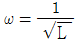
- ω = 1/C
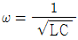
(정답률: 77%)
32. 반주기 동안 정현파 교류전압의 파형률은?
- 2/π
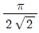
- π/2
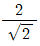
(정답률: 60%)
33. 필터의 차단 주파수는 출력 전압이 입력 전압의 몇 배인 주파수로 정의하는가?
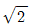
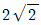
- 1/2
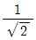
(정답률: 33%)
34. 저항 R과 유도 리액턴스 XL이 병렬로 연결된 회로의 역률은?
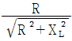
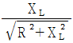
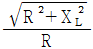
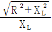
(정답률: 67%)
35. 전달함수
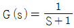
인 제어계의 인디셜 응답(indicial response)은?- 1 + e-t
- e-t
- 1 - e-t
- e-t - 1
(정답률: 69%)
36. 무한히 긴 전송 회로의 반사 계수는?
- 0
- 0.1
- 0.2
- 1
(정답률: 74%)
37. F(S) = 1인 역 Laplace 변환 f(t)는?
- 1
- u(t)
- δ(t)
- t
(정답률: 74%)
38. 그림과 같은 전류 파형의 주파수 f의 값은 몇 Hz 인가?
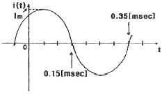
- 2.5
- 25
- 250
- 2500
(정답률: 55%)
39. 단위 길이당 임피던스 및 어드미턴스가 각각 Z 및 Y인 전송 선로의 전파정수는?
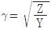
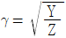
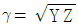
- ϓ = YZ
(정답률: 80%)
40. 그림과 같은 브리지(bridge)가 평형 상태를 유지하려면 L의 값은?
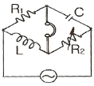
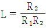
- L = CR1R2
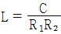
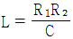
(정답률: 77%)
3과목: 전자계산기일반
41. 다음 채널 제어기에 대한 설명 중 옳은 것은?
- 하나의 입ㆍ출력 명령으로 한 블록의 자료만 입ㆍ출력 할 수 있다.
- 하나의 입ㆍ출력 명령에 의하여 여러 블록의 자료를 입ㆍ출력 할수 있다.
- 중앙처리장치와 마찬가지로 주기억장치에 있는 명령을 수행하는 기능은 있으나 주기억장치에 접근할 수 없다.
- 채널과 중앙처리장치는 동시 동작이 불가능 하므로 중앙처리장치는 입ㆍ출력을 위해 많은 시간이 소비된다.
(정답률: 70%)
42. 로더(loader)의 기능과 관계없는 것은?
- allocation
- linking
- loading
- binding
(정답률: 78%)
43. 명령어의 주소를 가지고 있으며, 실행 순서와 관련 있는 것은?
- program counter
- instruction register
- accumulator
- memory address register
(정답률: 70%)
44. 다음 중 연결이 옳지 않은 것은?
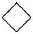
: 판단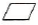
: 처리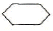
: 준비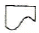
: 서류
(정답률: 60%)
45. 다음과 같이 병렬 가산기를 이용하는 산술연산에서 F에 출력되는 값은?
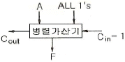
- A-1
- A+1
- A
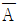
(정답률: 34%)
46. 중앙처리장치에서 마이크로 오퍼레이션이 순서적으로 처리되게 하려면 무엇이 필요한가?
- 스위치(switch)
- 레지스터(register)
- 누산기(accumulator)
- 제어신호(control signal)
(정답률: 70%)
47. 에러(error) 검출 및 교정도 할 수 있는 코드는?
- hamming 코드
- EBCDIC 코드
- Excess-3 코드
- 2421 코드
(정답률: 86%)
48. 어떤 인스트럭션이 수행되기 위하여 가장 먼저 행해야하는 마이크로 오퍼레이션은?
- IR → MAR
- PC → MAR
- PC → MBR
- PC+1 → PC
(정답률: 79%)
49. 컴퓨터 레지스터들 중에서 Read 나 Write 내용이 반드시 거쳐야 되는 레지스터는?
- PC(Program Counter)
- IR(Instruction Register)
- MBR(Memory Buffer Register)
- MAR(Memory Address Register)
(정답률: 66%)
50. 주소지정 방법에서 속도(speed)를 고려할 때 가장 빠른 것은?
- Calculated Address
- Immediate Address
- Direct Address
- Indirect Address
(정답률: 76%)
51. 그레이코드 (01110)G을 2진수로 변환하면?
- (11100)2
- (11101)2
- (01011)2
- (10001)2
(정답률: 70%)
52. 다음 중 C 언어 프로그램에서 연산 우선순위가 가장 높은 것은?
- ( )
- *
- ＜ ＞
- &
(정답률: 49%)
53. 음의 정수를 표현하는 방법이 아닌 것은?
- 부호화된 2의 보수 표시
- 부호화된 1의 보수 표시
- 부호와 절대값 표시
- 부호 보수값 표시
(정답률: 42%)
54. 어떤 컴퓨터의 기억장치 용량이 4096 워드이다. 각 워드가 16비트라고 하면 MAR과 MBR의 각 비트 수는?
- MAR : 12, MBR : 5
- MAR : 12, MBR : 16
- MAR : 32, MBR : 24
- MAR : 5, MBR : 12
(정답률: 76%)
55. 여러 개의 범용 레지스터를 가진 컴퓨터에서 사용되며, 연산 후에도 입력 자료가 변하지 않고 보존되는 특성이 있는 주소 방식은?
- 0-주소 방식
- 1-주소 방식
- 2-주소 방식
- 3-주소 방식
(정답률: 45%)
56. 하나의 프로세스를 서로 다른 기능을 가진 여러 개의 서브프로세스(sub process)로 분할하여 각 서브프로세스가 동시에 서로 다른 데이터를 취급하도록 하는 기법을 무엇이라 하는가?
- 파이프라인 제어 방식
- 프로세서 어레이 방식
- 프로세서 플로어 방식
- 데이터 플로어 방식
(정답률: 45%)
57. 어셈블리 언어(Assembly Language)로 작성된 프로그램을 기계어(Machine Language)로 변환하는 것은?
- Compiler
- Loader
- Language Decoder
- Assembler
(정답률: 58%)
58. Read와 Write가 가능한 주기억 장치 소자로 기억 상태를 유지하기 위해 주기적으로 재생 전원이 필요한 반도체 기억 장치는?
- DRAM
- SRAM
- EPROM
- PROM
(정답률: 83%)
59. 프로그램 언어로 프로그램을 작성하는 것을 무엇이라 하는가?
- Debugging
- Coding
- Flow chart
- Execute
(정답률: 95%)
60. 목적 프로그램을 생성하지 않고 필요할 때마다 기계어로 번역하여 실행하는 방식의 언어를 무엇이라 하는가?
- 어셈블러
- 컴파일러
- 인터프리터
- 마이크로어셈블러
(정답률: 81%)
4과목: 전자계측
61. 참값(T)이 500V, 측정값(M)이 502.5V 일 때 오차, 상대오차, 보정 및 보정률이 옳은 것은?
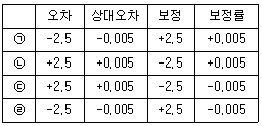
- ㉠
- ㉡
- ㉢
- ㉣
(정답률: 54%)
62. 다음 중 캠벨 브리지는 주로 무엇을 측정하기 위하여 사용되는 =가?
- 상호 인덕턴스
- 정전용량
- 컨덕턴스
- 고저항
(정답률: 86%)
63. 다음 식 중 잡음지수를 나타낸 식은? (단, No : 수신기의 유능잡음 출력전력, So : 수신기의 유능신호 출력전력, Ni : 수신기의 입력 유능잡음 전력, Si : 수신기의 유능입력 신호 전력)
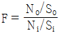
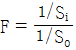
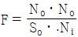
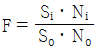
(정답률: 62%)
64. 다음 중 전해액이나 접지 저항을 측정할 때, 교류를 사용하는 이유로 옳은 것은?
- 습기를 제거하기 위하여
- 전극 내부의 분극 작용을 방지하기 위하여
- 전극 표면의 분극 작용을 방지하기 위하여
- 접지 저항보다 작은 저항 값을 지시하는 것을 방지하기 위하여
(정답률: 79%)
65. 다음 중 Q-meter 에 사용하는 전류계는?
- 열전대형
- 가동철편형
- 전류력계형
- 유도형
(정답률: 49%)
66. 전자력에 의한 구동 토크를 발생하는 계기로서 교류용으로 사용되는 계기는?
- 열선형
- 유도형
- 정전형
- 가동선륜형
(정답률: 62%)
67. 오실로스코프에서 제어 그리드 전압을 변화시키면 무엇이 조정되는가?
- 초점
- 휘도
- 수평 위치
- 수직 위치
(정답률: 75%)
68. 헤테로다인(heterodyne) 주파수계의 교정 방법이 아닌 것은?
- 표준 전파로 교정하는 방법
- 보간 발진기를 사용하는 방법
- 2중 비트(double beat)를 사용하는 방법
- 수정 발진기를 직접 비트(beat)시키는 방법
(정답률: 67%)
69. 다음 중 디지털 표시 주파수계에 사용하는 파형 정형회로의 명칭은?
- 클리핑 회로
- 클램프 회로
- 시미트 트리거 회로
- 컴퍼레이터 회로
(정답률: 68%)
70. 표준 저항기의 요구되는 성질이 아닌 것은?
- 저항률이 작을 것
- 저항값이 안정될 것
- 저항온도 계수가 작을 것
- 구리에 대한 열기전력이 작을 것
(정답률: 49%)
71. 다음 중 고주파 주파수 측정에 사용되지 않는 것은?
- 흡수형 주파수계
- 진동편형 주파수계
- 레헤르선(Lecher wire) 주파수계
- 버터플라이(butterfly)형 주파수계
(정답률: 81%)
72. 다음 중 고주파에 의해 발생되는 오차가 아닌 것은?
- 공진오차
- 파형오차
- 표피오차
- 접촉저항오차
(정답률: 62%)
73. 디지털 주파수계에서 카운터 부분의 회로는 어떤 회로로 구성되어 있는가?
- 리미터 회로
- 클램핑 회로
- 모노멀티 회로
- 플립플롭 회로
(정답률: 80%)
74. 고주파 회로를 측정할 때의 주의사항 중 옳지 않은 것은?
- 표유 임피던스를 크게 할 것
- 평형 및 불평형 회로를 구분 사용할 것
- 주파수대에 적합한 회로 소자를 사용할 것
- 기기(機器) 또는 회로의 임피던스를 정합시킬 것
(정답률: 83%)
75. 다음 그림은 이상적인 펄스를 나타낸 것이다. 펄스의 점유율(duty cycle) D 를 나타낸 것은?
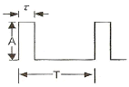
- D = T/τ
- D = τ/T
- D = A/τ
- D = τ/A
(정답률: 66%)
76. 다음 중 셰링 브리지(Schering bridge)로 측정할 수 있는 것은?
- 유전체 손실각
- 유도 리액턴스
- 동손
- 철심의 와전류
(정답률: 74%)
77. 트리거 스위프식 오실로스코프의 회로구성에서 □ 안에 알맞은 것은?
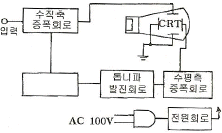
- 적분회로
- 트리거회로
- 차동증폭회로
- 입력절환회로
(정답률: 83%)
78. 파형을 보면서 주파수 펄스 전압을 측정하는데 가장 적당한 계기는?
- 전압계
- 전위차계
- 전류계
- 오실로스코프
(정답률: 98%)
79. 디지털(Digital) 전압계의 원리에 해당되는 것은?
- 비교기
- 미분기
- D-A 변환기
- A-D 변환기
(정답률: 87%)
80. 저저항을 측정하는 방법의 종류가 아닌 것은?
- 전압강하법
- 전위차계법
- 전압계법
- 캘빈더블 브리지법
(정답률: 50%)
이유: 베이스 접지의 트랜지스터 증폭회로는 입력신호와 출력신호가 같은 위상을 가지기 때문에 위상차가 없다. 즉, 입력신호와 출력신호가 동일한 시간에 변화하며, 이는 위상차가 없음을 의미한다.